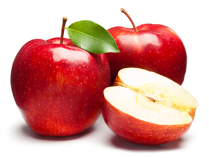
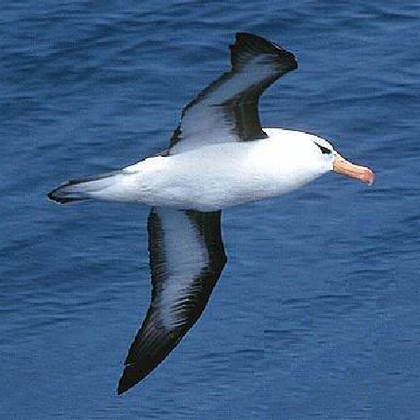
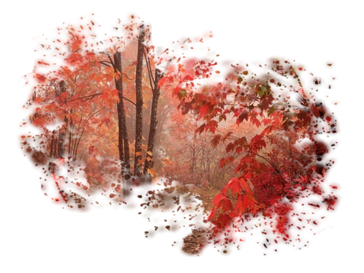

On manipule encore le curseur de la barre de d�filement,
On appelle ce syst�me la barre de d�filement vertical, avec le curseur de d�placement.
Voici un recueil de po�sie, d�placez-vous d'un po�me � l'autre.

On manipule encore le curseur de la barre de d�filement, On appelle ce syst�me la barre de d�filement vertical, avec le curseur de d�placement. Voici un recueil de po�sie, d�placez-vous d'un po�me � l'autre.
|
|
La pomme On la d�guste on l'avale Elle est aussi dure qu'un narval On l'aime elle est juteuse Sans douter qu'elle est menteuse Elle dit qu'elle est ronde et blonde Avez-vous d�j� vu une pomme ronde Sans nul doute qu'elle est blonde Elle tombe d'un arbre Sans une �gratignure, elle est de marbre Mais son coeur se brise Quand on ne lui fait pas la bise C'est la pomme menteuse et juteuse Qui n'ose dire la v�rit� Sans douter qu'elle est gaiet�. |
 |
 |
L'albatros Souvent, pour s'amuser, les hommes d'�quipage Prennent des albatros, vastes oiseaux des mers, Qui suivent, indolents compagnons de voyage, Le navire glissant sur les gouffres amers.
A peine les ont-ils d�pos�s sur les planches, Que ces rois de l'azur, maladroits et honteux, Laissent piteusement leurs grandes ailes blanches Comme des avirons tra�ner � c�t� d'eux.
Ce voyageur ail�, comme il est gauche et veule ! Lui, nagu�re si beau, qu'il est comique et laid ! L'un agace son bec avec un br�le-gueule, L'autre mime, en boitant, l'infirme qui volait !
Le po�te est semblable au prince des nu�es Qui hante la temp�te et se rit de l'archer; Exil� sur le sol au milieu des hu�es, Ses ailes de g�ants l'emp�chent de marcher. |
L' automne
L' automne au coin du bois , |
 |
L'�COLE DES BEAUX-ARTS
Dans une bo�te de paille tress�e Le p�re choisit une petite boule de papier Et il la jette Dans la cuvette Devant ses enfants intrigu�s Surgit alors Multicolore La grande fleur japonaise Le n�nuphar instantan� Et les enfants se taisent �merveill�s Jamais plus tard dans leur souvenir Cette fleur ne pourra se faner Cette fleur subite Faite pour eux A la minute Devant eux |
|
Tr�s bien revenir � la premi�re po�sie sur l'automne puis redescendre en bas et cliquer sur le bouton suite |
|